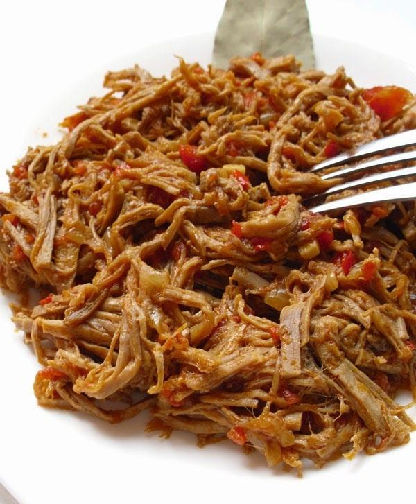

Carne mechada

Description
Pulled beef cooked with onions, bell peppers, tomatoes and spices. Delicious and portionable!
Ingredients
Beef
- 2 lb skirt, flank or chuck steak
- 1 onion, quartered
Sauce
- 1 tablespoon cooking oil, preferably corn oil
- 1 onion, sliced into rings
- 2 red bell pepers, sliced into strips
- 3 garlic cloves, minced
- 2 tomatoes, diced
- 1 tablespoon Worcestershire sauce
- 1 teaspoon salt
- 1/2 teaspoon black pepper, ground
- 1/4 teaspoon cumin
- 2 cups reserved beef cooking broth (from "Beef" steps)
Steps
Beef
- Trim the fat off the beef and then quarter the meat. Place the meat pieces in a medium soup pot and cover them with water. Add the quartered onion and simmer for two hours, removing any scum that floats to the top.
- Once simmered, remove the pot from heat and let it cool. Reserve 2 cups of the resulting broth. Throw away the quartered onion.
- Take two forks and pull apart the meat into strands. Set aside.
Sauce
- Pour the oil into a wok and heat on medium high heat. Add the onion and bell pepper slices, and the garlic. Heat until the onion slices are soft, 4-5 minutes.
- Add the diced tomatoes, Worcestershire sauce, salt, pepper, and cumin. Mix well.
- Add the strands of beef and 2 cups of beef broth, then bring the mixture to a boil. Reduce the heat and simmer, uncovered, for 20 minutes or until liquid has reduced to your taste. Stir when necessary.
- Turn off the heat and serve the resulting carne mechada straight from the wok. It pairs well with rice, beans and plantains, as in pabellon criollo.